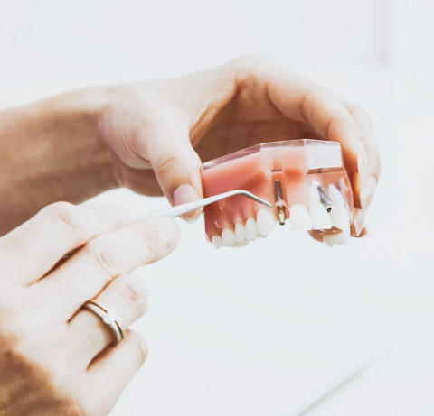

Cтоматологическая клиника
Проект YniClinic прошел все этапы от разработки до продвижения
в нашей компании.
YniClinic
топ10
Яндекс
топ30
Google
Наша команда вывела сайт в топ-10, топ-30 позиций SEO-оптимизации. Увеличила рост трафика и посещаемости сайта, что привело клинике новых клиентов, прибыль и узнаваемость бренда.
О проекте
Наш клиент
Крупная стоматологическая клиника «YniClinic»
Срок сотрудничества
октябрь 2019 —октябрь 2020
Регион продвижения
Москва
Основные направления
YniClinic —
многопрофильная стоматологическая клиника, в которой работают квалифицированные хирурги и врачи-ортопеды.
1
Семейная стоматология
2
Имплантация зубов
3
Эстетическая стоматология
4
Выравнивание зубов
5
Протезирование зубов
Цель проекта
Цель проекта — вывести YniClinic
в топ-10 позиций в поиске и увеличить трафик сайта в Яндексе и Google, для увеличения количества посетителей.
Хотим увеличить количество звонков, повысить поток пациентов, рост количества посетителей сайта, увеличить клиентскую базу, создать полезную информацию
для пациентов (написание полезных статей о стоматологии).
Главный врач
стоматологической клиники
стоматологической клиники
Отправная точка
Летом 2019 года сотрудники YniClinic обратились в компанию Webernetic за разработкой и продвижением сайта.
Наша команда SEO отдела составила структуру сайта, собрала семантическое ядро и предоставила технические требования для дальнейшей разработки веб-приложения.
После того, как сайт был разработан, мы приступили к оптимизации и продвижению.
